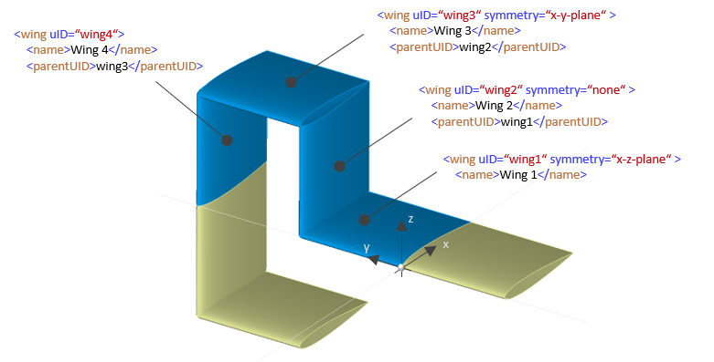
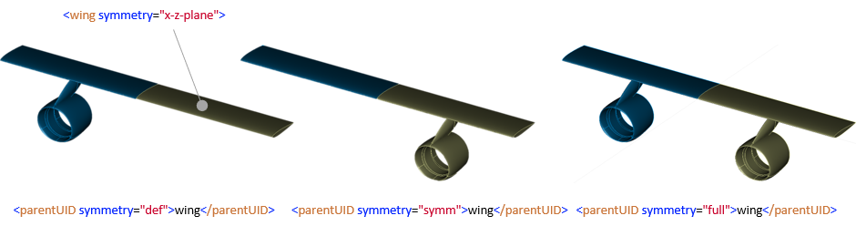

8.1. Specification of symmetric elements
Sometimes it might be useful to specify a part of the aircraft as symmetric instead of holding all the data twice in nearly identical form in the dataset (e.g. left and right wing are usually identical, except for the sign of the y-coordinate). Hence, some parts offer the option to set a symmetry attribute:
<wing symmetry="x-z-plane">There are six possible attribute values:
One example of how to apply the symmetry attribute is shown in Sec. 3.2. Another simplified example shown below illustrates the combination of different symmetry properties of 4 wings:

Note: The corresponding transformations are not shown here.
8.2. Referencing symmetric elements
All nodes (e.g., <parentUID>) in CPACS that refer to a component holding the symmetry attribute (e.g., <wing>) might also have a symmetry attribute to specify how symmetry is propagated through the resulting element hierarchy.
The symmetry attribute of a referencing element may take three values: symm, def, full:
symmetry attribute and refers only to the defined side of the geometric component. symmetry attribute and refers only to the symmetric side of the geometric component. (Similar to the previous _symm solution) symmetry attribute and refers to the complete component. (This is the default behaviour) 
For example, to refer to the "other" side of a mirrored wing the following the following syntax might be used:
<enginePylons>
<enginePylon uID="pylon">
<parentUID symmetry="symm">wing</parentUID>Note: This feature is not implemented in TiGL. The upper figure is manually processed to illustrate the principle. In addition, there is an ongoing debate whether the approach is suitable for CPACS due to rapidly increasing complexity and unresolved implicit assumptions as to whether it is one or two components after mirroring. Therefore, it is advised to avoid using the symmetry attribute if possible.